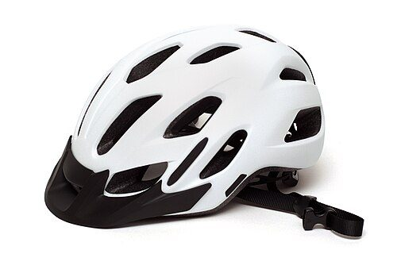

Caring for your brain
Exercise, sleep, diet, blood pressure, hearing, alcohol, screens, helmets and stress.
Prevention
 Prevention
PreventionThe 14 modifiable risk factors for dementia
According to the 2024 Lancet Commission, almost half of dementia cases could be prevented or delayed by acting on 14 factors across the lifespan. What they are and what to do about each.
Read → Prevention
PreventionBlood pressure and the brain
High blood pressure is the main risk factor for stroke and one of the most important for dementia. Controlling it is the single measure that most protects the brain. Figures, home readings and targets.
Read → Prevention
PreventionAlcohol, tobacco and drugs
How alcohol (there is no safe dose), tobacco, cannabis and other drugs affect the brain. Stroke, dementia, seizures and damage to the developing brain.
Read → Prevention
PreventionHearing and sight
Hearing loss in midlife is the modifiable dementia risk factor with the greatest weight, and untreated vision loss counts too. Hearing aids and cataract surgery protect the brain.
Read →
PreventionProtecting your head
Helmets, seat belts, child car seats and fall prevention: simple measures that prevent thousands of head injuries every year. And what to do about knocks in sport.
Read →Habits
 Habits
HabitsPhysical exercise and the brain
Moving is probably the best thing you can do for your brain: it improves blood flow, stimulates new connections, lowers the risk of stroke and dementia, and improves mood and sleep.
Read → Habits
HabitsDiet and the brain
There are no superfoods for the brain, but there are eating patterns that protect it, such as the Mediterranean diet. What the evidence says about supplements, omega-3 and vitamins.
Read →HabitsSleeping well
Practical, evidence-based tips for better sleep: schedules, light, screens, caffeine, alcohol, naps and what to do if you cannot get to sleep.
Read → Habits
HabitsCognitive reserve
Why two people with the same brain damage can have very different symptoms. Education, stimulating work, reading, languages, music and social life build reserve.
Read → Habits
HabitsScreens and the brain
What we know and do not know about the effect of phones, tablets and social media on the brains of children, teenagers and adults. Sensible advice without alarmism.
Read → Habits
HabitsStress and the brain
Acute stress prepares us to act; chronic stress wears down the hippocampus and prefrontal cortex, disturbs sleep and increases vascular risk. What happens in the brain and what helps.
Read →